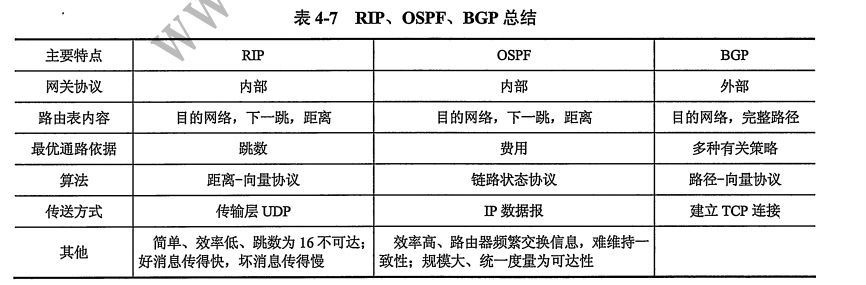
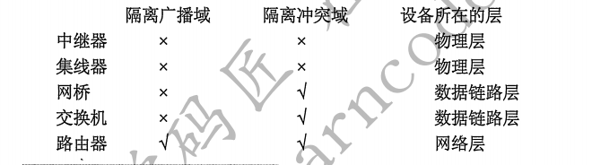

第一章、计算机网络体系结构
1.计算机网络的定义
计算机网络就是一些互连的，自治的计算机系统的集合。
2.计算机网络的组成
(1)物理组成：硬件（
由主机、通信处理剂、通信线路和交换设备组成），软件（实现资源共享的软件和方便用户使用的工具软件），协议（一种规则）;
(2)工作方式组成：边缘部分(由所有连接在互联网上，供用户直接使用的主机组成，用来进行通信和资源共享)，核心部分(由大量的网络和连接这些网络的路由器组成，它为边缘部分提供连通性和交换服务)；
(3)功能组成：通信子网(由各种传输介质、通信设备和相应的网络协议组成，为网络提供数据传输、交换和控制能力，实现互联网计算机之间的数据通信)，资源子网(由主机、终端以及各种软件资源、信息资源组成，负责全网的数据处理业务，向网络用户提供各种网络资源与服务)。
注意：通信子网包括物理层，数据链路层和网络层
3.计算机网络的功能
数据通信：计算机网络
最基本和最重要的功能，包括连接控制、传输控制、差错控制、流量控制、路由选择、多路复用等子功能；
资源共享：包括数据资源、软件资源以及硬件资源；
分布式处理：当计算机网络中某个计算机系统负载过重时，可以将其处理的任务传送给网络中的其他计算机系统进行处理，利用空闲计算机资源提高整个系统的利用率；
信息综合处理：将分散在各地计算机中的数据资料进行集中处理或分级处理；
负载均衡：将工作任务均衡地分配给计算机网络中的各台计算机；
提高可靠性：计算机网络中的各台计算机可以通过网络互为替代机。
4.计算机网络的分类
(1)按分布范围分类：广域网、城域网、局域网、个人区域网；
(2)按拓扑结构分类：星形网络、总线型网络、环形网络、网状型网络；
(3)按传输技术分类：广播式网络、点对点网络；
(4)按使用者分类：公用网、专用网；
(5)按数据交换技术分类：电路交换网络、报文交换网络、分组交换网络；
5.计算机网络的标准化工作及相关组织
互联网草案–>建议标准（RFC文档）–>草案标准–>互联网标准。
ISO 、ITO 、IEEE
6. 实体、对等层、对等实体
实体：任何可发送或接收信息的硬件或软件进程，通常是一个特定的软件模块；
对等层：不同机器上的同一层；
对等实体：同一层上的实体。
7.协议
协议是控制两个对等实体进行通信的规则，也就是水平的。
协议的组成包括：语义（对构成协议的元素含义的解释），语法（数据与控制信息的结构或格式）和同步（规定了协议的控制顺序）。
8.接口
接口又称
服务访问点，没有接口就不能提供服务；
SDU、PCI、ICI、PDU、IDU。
9.服务
服务指下层为相邻上层提供的功能调用。
协议是水平的，而服务是垂直的。
服务主要包括以下三类：
(1)面向连接的服务（建立连接、使用连接、释放连接）和面
向无连接的服务（把每个带有目的地址的包传送到线路上，由系统选定路线进行传输）；
(2)有应答服务（接收方收到数据后向发送方给出相应的应答）
和无应答服务（接收方收到数据后不自动给出应答）；
(3)可靠服务(网络具有检错、纠错、应答机制)和不可靠服务（尽力而为）；
10.面向连接的服务和面向无连接服务的对比
面向连接的服务：
优点：可靠信息流（只要被接收的都是正确的）;
信息回复确认（每收到一条信息就回复一次，若出错则告诉发送方，要求重传）
缺点：占用通信信道
面向无连接的服务：
优点：不占用通信信道
缺点：信息流可能丢失（在传输过程中，信息可能丢失，对方可能收不到信息）；
信息无回复确认（收到信息就收下，不告诉对方已经收到）。
11.计算机网络的性能指标
(1)时延：发送时延(传输时延)+传播时延+处理时延+排队时延;
(2)时延带宽积：传播时延带宽;
(3)往返时间：从发送方发送数据开始，到发送方收到来自接收方的确认消息为止
(4)利用率：信道利用率（某信道有百分之几的时间时被利用的）+网络利用率（全网络的信道利用率的平均值）。
12.五层参考模型总结
13.OSI参考模型和TCP/IP参考模型的特性对比

第二章、物理层
1.信号
信号是数据（
传送信息的实体）的电气或电磁的表现。
信道上传送的信号可以分为基带信号和宽带信号。
基带信号是将数字信号0和1直接用两种不同的电压表示，然后传送到数字信道上去传输，称为基带传输。
宽带信号是将基带信号进行调制后形成模拟信号，然后再传送到模拟信道上去传输，称为宽带传输。
一句话：基带对应数字信号，宽带对应模拟信号。
注意：宽带传输==频带传输(in 考研）。
2.信源、信道、信宿
信源：通信过程中产生和发送信息的设备或计算机。
信道：信息传送的道路，也就是信号的传输媒质，分为有线信道和无线信道。
信宿：通信过程中接收和处理信息的设备或计算机。
3.速率、波特、码元
速率就是单位时间内传输的数据量，可用波特率和比特率来描述。
波特率：又称码元传输速率，表示单位时间内数字通信系统所能传输的码元个数。
比特率：又称信息传输速率，表示单位时间内数字通信系统所能传输的二进制码元个数，即比特数，单位为bit/s。
4.带宽
在计算机网络中，带宽是用来表示
网络的通信线路所能传送数据的能力，表示单位时间内从网络中的某一点到另一点所能通过的最高数据率。
此时，带宽的单位不再是赫兹(Hz)，而是bit/s。
5.奈奎斯特定理
由来：寻找在保证不出现码间串扰的条件下的码元的最大传输速率。
（码间串扰：具体的信道所能通过的频率范围总是有限的，所以信号中的大部分高频分量就过不去了，这样在传输共享中会衰减，导致在接收端收到的信号的波形就失去了码元之间的清晰界限，这种现象就是码间串扰）
奈奎斯特定理:
$$C_{max}=f_{采样}*log_2N(bit/s)$$
其中，f代表理想低通信道的带宽，N表示每个码元的离散电平的数目。
6.区分低通信道和带通信道
低通信道就是信号的频率只要不超过某个上限值，都可以不失真地通过信道（有上限，无下限），理想低通信道的最高码元传输速率是每秒2个码元；带通信道既有上限也有下限，，理想带通信道的最高码元传输速率是每秒1个码元。
7.香农定理
公式：
$$C_{max}=W*log_2(1+S/N)(bit/s)$$
其中，W为信道的带宽，$S/N$为信噪比。
想要提高信息的传输速率，需要增大信噪比或者提高带宽（注意：仅仅提高改善编码不可能超过香农公式算出的速率）。
8.对比奈奎斯特定理和香农定理
奈奎斯特定理：
(1)指出了码元的传输速率是受限的，不能任意提高，否则在接收端就无法判定码元是0还是1（码间串扰）;
(2)是在理想条件下推出来的(无噪声);
(3)并没有对信息传输速率给出限制（可以无限大，只要编码技术足够好）。
香农定理:
(1)给出了信息传输速率的极限值，只要传输带宽（Hz）和信噪比确定了，传输速率也就确定了;
(2)有噪声。
9.编码与调制
编码：将模拟数据或数字数据转换为数字信号的过程。
调制：将模拟数据或数字数据转化为模拟信号的过程。
9.1调制
(1)数字数据调制为模拟信号：
1)带通调制：将基带信号的频带范围搬移到较高的频段以便在信道中传输（3种方法：调频，调幅，调相）；
2)基带调制：改变基带信号的低频成分的波形（仍是基带信号）。
(2)模拟数据调制为模拟信号：（原因）
1)为了实现传输的有效性，可能需要较高的频率；
2)充分利用带宽。
9.2编码
(1)数字数据编码为数字信号：
用于基带信号传输中。
常用编码方式：
1)非归零码；
2)曼彻斯特编码；
3)差分曼彻斯特编码。
(2)模拟数据编码为数字信号：
典型例子就是脉冲编码调制，有3个步骤：采样、量化、编码。
10.数据传输方式(电路交换、报文交换、分组交换)
(1)电路交换：在通信之前，通信双方建立一条被双方独占的物理通路。
优点：
1)通信时延小；
2)实时性强；
3)有序传输；
4)使用范围广（数字/模拟信号均可传输）；
5)控制简单；
6)避免冲突。
缺点：
1)建立连接时间长；
2)信道利用率低；
3)缺乏统一标准(电路交换时，数据之大，不同规格终端难以相互通信，也很难进行差错控制)；
4)灵活性差（任一节点出错都需要建立新的连接）。
(2)报文交换：数据交换的单位是报文，报文携带目的地址、源地址等信息；报文交换在交换节点时采用存储转发方式。
优点：
1)无需建立连接(因此不存在连接时延)；
2）动态分配线路；
3提高了可靠性；
4)提高线路利用率；
5)提供多目标服务（一个报文可以发送到多个目的地址）。
缺点：
1)由于数据进入交换节点后要经理存储、转发这一过程，从而引起转发时延；
2)报文交换对报文的大小没有限制，这就要求网络节点有大量的存储缓存空间。
【注】：报文交换主要用于早起的电报通信网中，现在被较先进的分组交换方式取代。
(3)分组交换：仍采用存储转发方式，但将一个长报文先分割为若干较短的分组，然后逐个转发分组（每个分组都携带目的地址、源地址和编号信息）。
优点：
1)加速传输（分组是逐个传输的，所以可以使后一个分组的存储操作与前一个分组的转发操作并行；传输一个分组所需缓冲区较小，因此因缓冲区不足而等待发送的概率以及等待时间也会减小）；
2)简化了存储管理（分组长度固定，相应缓冲区大小也固定）；
3)减少了出错概率和重发数据量(因为分组较短，所以出错概率也较小，这样既提高了可靠性，又降低了传输时延)；
缺点：
1)存在传输时延（尽管比报文交换的传输时延少，但相对于电路交换，仍存在存储转发时延，而且其结点交换机必须具有更强的处理能力）；
2)当分组交换采用数据报服务时，可能会出现失序、丢失或重复分组的现象，分组到达目的节点时，要重排，很麻烦；若采用虚电路服务，虽无失序问题，单有呼叫建立、数据传输和虚电路释放3个过程。
11.电路交换、报文交换、分组交换的应用场景
传送的数据量很大，且其传送时间远大于呼叫时间–>电路交换；端到端的通路由很多段链路组成–>分组交换；
从提高整个网络的信道利用率来看，报文交换和分组交换优于电路交换，其中分组交换比报文交换的时延小，尤其适合计算机之间的突发式的数据通信。
12.分组交换的方式（无连接的数据报方式、面向连接的虚电路方式）
（1）数据报：
1)发送分组前无需建立连接；
2)网络尽最大努力交付，传输不保证可靠性，可能乱序或丢失；
3)在具有多个分组的报文中，交换机尚未接收完第二个分组，已经收到的第一个分组就可以转发出去，不仅减小了延迟，而且大大提高了吞吐量；
4)当某一台交换机或一段链路故障时，可相应地更新转发表，寻找到另一条替代路径转发分组，对故障适应能力强；
5)发送方和接收方不独占某一链路，所以资源利用率高。
（2）虚电路：发送数据之前，在源主机和目的主机之间建立一条虚连接(逻辑上的连接)。
1）用户之间必须建立连接，数据传输过程中不再需要寻找路径，相对数据报方式开销小；
2)分组走相同路径，故按序到达；
3）分组首部并不包含目的地址，而是包含虚电路标识符，相对数据报方式开销小；
4)当某个交换机或某条链路出现故障而彻底失效时，所有经过该交换机或该链路的虚电路将遭到破坏。
13.传输介质分类
（1）导向性传输介质：
双绞线（无屏蔽双绞线和屏蔽双绞线）、同轴电缆、光纤；
(2)非导向性传输介质：
短波、微波、红外线与可见光。
14.物理层接口特性
机械特性、电气特性、功能特性、规程特性。
15.物理层设备
中继器、集线器（多端口的中继器，处在网络中心，也叫
HUb）。
注意：中继器放大模拟信号，放大器放大数字信号
这俩货的缺点：
1）扩大了冲突域且总的吞吐量未提高；
2)不能互联使用不同以太网技术的局域网。
第三章、数据链路层
1.数据链路层的功能
数据链路层在物理层所提供的服务的基础上向网络层提供服务，即将原始的、有差错的物理线路改进成逻辑上无差错的数据链路，从而向网络层提供高质量的服务，包括3种：无确认的无连接服务、有确认的无连接服务和有确认的有连接服务（没有无确认的有连接服务）
(1)链路管理：负责数据链路的建立、维持和释放，主要用于面向连接的服务；
(2)帧同步：接收方确定收到的比特流中以帧的开始位置和结束位置；
(3)差错控制：用于使接收方确定接收到的数据就是发送方发送的数据；
(4)透明传输：解决与控制符形同的数据如何发送，就是不管数据是什么样的比特组合，都应当能在链路上发送；
2.组帧（在网络中以帧为最小传输单位）
2.1 为什么要组帧
如果传输比特流出错，只需要重传出错的帧即可，无需重传全部比特流，值！
2.2 组帧的4种方法
(1)字符计数法：用一个
特殊的字符表示一帧的开始，然后用一个计数字段来表明该帧包含的字节数。当目的主机接收到该帧时，根据此字段提供的字节数，便可知道该帧的结束位和下一帧的开始位。
存在问题：若计算字段出错，就无法实现帧同步，因此该方法很少被使用。
(2)字节填充的首尾界符法：在数据中可能出现的控制字符前面加上转义字符ESC。
(3)比特填充的首尾标识法（零比特填充法）：使用01111110作为帧的开始和结束标志。若数据部分也出现01111110，可以这样子：
只要数据帧检测到有5个连续的1，就麻黄素那个在后面插入0，而接收方没收到连续的5个1，就自动删除后面紧跟的0，以恢复原始数据。
(4)物理编码违例法
利用物理介质上编码的违法标志来区分帧的开始和结束。
3.差错控制
3.1 检错编码
（1）奇偶校验码：在信息码后面添加一位校验码，分为
奇校验和偶校验：
1)奇校验：添加一位校验码后，使得整个码字里面1的个数是奇数。接收端若检测到偶数个1，则认为数据出错，要求重发数据；
2)偶校验：添加一位校验码后，使得整个码字里面1的个数是偶数。接收端若检测到奇数个1，则认为数据出错，要求重发数据；
缺点：若同时有两位数据发送改变，则无法检出错误。检错率低
（2）循环冗余码(CRC)
优势：检错率极高、开销小、易实现。
3.2 纠错编码（不但能检错，还能纠错）
海明码。
4.流量控制和可靠传输机制（in 传输层）
4.1 流量控制
含义：控制发送方发送数据的速率，使接收方来得及接收。
基本方法：由接收方控制发送方的数据流，常见两种方法：
1）停止-等待流量控制：发送方发出一帧，然后等待应答信号到达再发送下一帧；接收方每收到一帧后，返回一个应答信号，表示可以接收下一帧，如果接收方不返回应答，则发送方必须一直等待；
2）滑动窗口流量控制：在任意时刻，发送方都维护了一组连续的允许发送的帧的序号，称为发送窗口；同时，接收方也维护了一组连续的允许接收的帧的序号，称为接收窗口。发送窗口内的序列号代表了那些已经被发送但是还没有被确认的帧，或者是那些可以被发送的帧。发送端每收到一个帧的确认，就发送串口就向前滑动一个帧的位置。当发送窗口尺寸达到最大尺寸时，发送方会强行关闭网络层，直到有一个空闲缓冲区出来。在接收端只有当收到的数据帧的发送序号落入接收窗口内才允许将该帧收下，并将窗口前移一个位置。若收到的数据帧落到接收窗口之外，就丢弃。
4.2 可靠传输机制(包括：停止-等待协议、后退N帧协议、选择重传协议)
与无差错接收（比如在数据链路层使用循环冗余码检验差错检测技术，凡是接收端接收的帧均无差错，有差错的被丢弃了呗）不同，可靠传输是指
数据链路层发送什么，接收端就接收什么。传输差错包括无比特差错（可用CRC检测）和无传输差错（更复杂，可能帧没问题，但出现了帧失序或者帧重复）。
4.3.滑动窗口机制
只有在接收窗口向前滑动时（与此同时也发送了确认），发送窗口才有可能向前滑动。
当接收窗口大小为1时，可保证帧按序接收。
4.4 停止-等待协议（基于停止-等待流量控制技术）
原理：发送方传输一个帧后，必须等待对方的确认才能发送下一帧。若在规定的时间内没有收到确认，则发送超时，并重传原始帧。
4.5后退N帧（GBN）协议（基于滑动窗口流量控制技术）
原理：发送方发送完一个数据帧后，不是停下来等待确认帧，而是可以连续再发送若干个数据帧。如果这时收到了接收方的确认帧，那么还可以接着再发送数据帧。如果某个帧出错了，接收方只能简单地丢弃该帧机器所有的后续帧。发送方超时后需重发该出错帧及其后续所有帧。
评价：减少了等待时间，使得整个通信的吞吐量得到提高。但接收方已发行错误帧，就不再接收后续帧，造成了一定浪费。于是有了下面的选择重传协议
4.6 选择重传（SR）协议（基于滑动窗口流量控制技术）
原理：若一帧出错，则其后续帧先存入接收方的缓冲区帧，同时要求发送方重传出错帧，一旦收到重传帧后，就和原先存在缓冲区的其余帧一起按正确的顺序送至主机。
评价：避免了重复传输那些本来已经正确到达接收方的数据帧，进一步提高了信道利用率，但代价是增加了缓冲空间。
5.介质访问控制
(1)信道划分介质访问控制；
(2)随机访问介质访问控制；
(3)轮询访问介质访问控制。
5.1 信道划分介质访问控制(静态划分信道)
1)频分多路复用：
将一条信道分割成多个不同频率的信道(类似将马路分割为多个车道)。
若复用数之间，则需增加信道的(频率)带宽。
2)时分多路复用：
将一个固定时间分割成多个时间段。
但是有可能某个时间段内，要使用的那个人不用了，此时会出现空等状态，太浪费
于是出现了改进版的，也就是统计时分复用，这是一种动态的时间分配，又称异步时分复用，可以避免浪费（只要没人用就自己用）。
3)波分多路复用：
光的频分多路复用。
4)码分多路复用：
又称码分多址（CDMA），既共享信道的频率，又共享时间，是一种真正的动态复用技术，抗干扰能力强、保密性强、语音质量好。
5.2 随机访问介质访问控制（动态划分信道–>随机接入）
【注1】动态划分信道包括随机接入和受控接入
【注2】随机访问介质访问控制又称争用型协议，因为其核心思想是通过争用，胜利者才可以获得信道，主要有4种协议：
1）
ALOHA协议：
当网络中的任何一个结点发送数据时，可以不进行任何检测就发送数据。如果在一段时间内没有收到确认，该结点就认为传输过程中发生了冲突。发生冲突的结点需要等待一个随机的数据后再次发生数据。直到发送成功。
缺点：信道利用率不理想
改进:时分ALOHA：所有结点的时间被划分为间隔相同的时隙，并规定每个节点只有当下一个时隙到来时才可以发送数据。
2）载波侦听多路访问(CSMA)协议：
每个节点在发送数据之前，使用载波侦听技术来判定通信信道是否空闲，常用3种策略：
1-坚持CSMA：一旦监听到信道空闲立即发送数据，否则继续监听；
p-坚持CSMA：一旦监听到信道空闲，以概率p发送数据，以概率（1-p）延迟一段时间并重新监听；
非坚持CSMA：一旦监听到信道空闲，便立即发送数据，否则延迟一段随机时间再重新监听。
3）带冲突检测的载波侦听多路访问（CSMA/CD）协议：
策略：先听后发，边听边发，冲突停发，随机重发。
争用期：以太网端到端的往返时延，又称冲突窗口或者碰撞窗口。只有经过争用期这段时间还没有检测到冲突，才能肯定这次发送不会发生冲突。
4)CSMA/CA协议：
在CSMA基础上增加了冲突避免功能。主要用在无线局域网中。
冲突避免要求每个结点在发送数据之前监听信道，若信道空闲，则发送数据。发送完一个帧后，必须等待一段时间，检查接收方是否发回了帧确认，若收到则继续发送，否则表明出现冲突，重发该帧。
5.3 轮询访问介质访问控制（动态划分信道–>受控接入）
用户不能随意地发送信息，而是通过一个集中控制的监控站经过轮询过程后再决定信道的分配。典型的轮询访问介质访问控制协议就是令牌传递协议。
6.局域网
6.1 局域网的基本概念
6.1.1 局域网的定义
局域网是指一个较小范围内的多台计算机或者其他通信设备，通过双绞线、同轴电缆等连接介质互连起来，以达到资源和信息共享目的的互联网络。
6.1.2 局域网的主要特点
1)局域网为一个单位所拥有；
2)地理范围和站点数目有限；
3)与以前的非光纤的广域网相比，局域网具有较高的数据率、较低的时延和较小的误码率。
6.1.3 局域网的主要优点
1）具有广播功能，从一个站点可很方便访问全网；
2）具有==便于系统的扩展和演变，各设备的位置可灵活的调整和改变；
3)提高了系统的可靠性、可用性；
4)各站为平等关系而不是主从关系。
6.1.4 局域网的主要技术要素
(1)网络拓扑结构：星形网、环形网、总线型网和树形网。
(2)传输介质：双绞线（主流）、铜缆、光纤。
(3)介质访问控制方法：CSMA/CD、令牌总线和令牌环。
6.2一个局域网的典型代表—-以太网
工作原理：以太网采用
IEEE802.3标准，采用总线拓扑结构，信息以广播形式发送，使用CSMA/CD技术对总线进行访问控制，提供的是不可靠的服务（无连接，不对发送的数据帧编号，也不要求接收方发回确认）。
以太网的MAC帧：包括前导码和目的地址、源地址和类型和数据和填充和校验码。
以太网的传输介质：10Base5（粗缆）、10Base2（细缆）、10Base-T（双绞线）、10Base-F（光纤）。
6.3 高速以太网（传输速率>=100Mbit/s）
100Base-T以太网、吉比特以太网（千兆以太网），10吉比特以太网。
6.4 无线局域网
可分为有固定设施的无线局域网和无固定设施的无线局域网。
6.5 令牌环网的工作原理
(1）当网络空闲时，环路中只有令牌在网络中循环传递；
(2) 令牌传递到有数据要发送的结点处，该节点就修改令牌的一个标志位，然后在令牌中附加自己需要的数据，这样就将令牌改换成了一个数据帧，源结点将这个数据帧发送出去；
(3)数据帧沿着环路传递，接收到的结点一边转发数据，一边查看帧的目的地址，若是自己的就收下；
(4）当数据帧到达了源节点，源节点收到了自己发出去的数据帧，便不再转发了。同时，源节点要通过校验返回的数据帧进行检错，若出错，则重发；
(5源节点传送完数据后，重新产生一个令牌，并将其传递给下一个站点，以交出发送数据帧的权限。
7.广域网
7.1 广域网定义
覆盖范围很广的长距离网络。
7.2 PPP（面向字节，无连接）
组成：
1)一个将IP数据包封装到串行链路的方法；
2)一个链路控制协议（LCP）；
3)一套网络控制协议（NCP）。
PPP的帧格式：
标志字段（F）、地址字段（A）、控制字段（C）、协议字段、信息部分、帧检验序列（FCS）。
7.3 HDLC协议（面向比特）
HDLC协议可适用于两种配置：非平衡配置（由一个主站控制整个链路的工作）和平衡配置（链路两端的两个站都是复合站，每个复合站都可以平等地发起数据传输，而不需要得到对方复合站的允许）。
HDLC协议的帧格式：
标志字段（F）、地址字段（A）、控制字段（C）、信息字段、帧检验序列（FCS）。
8.数据链路层的设备
8.1 网桥
具有过滤帧的功能。
优点：
1)过滤通信量；
2)扩大了物理范围；
3)提高了可靠性；
4)可互连不同物理层、不同MAC子层和不同速率的以太网。
缺点：
1)存储转发增加了时延；
2)在MAC子层并没有流量控制功能；
3)具有不同MAC子层的网段桥接在一起时时延更大；
网桥只适合于用户数不太多和通信量不太大的局域网，否则产生广播风暴（传播过多的广播信息而产生网络拥塞）。
分类：透明网桥（选择的不是最佳路由）、源选径网桥。
8.2 局域网交换机
实质：多端口网桥。
优点：不仅每个端口节点所占用的带宽不会因为端口节点数量的最佳而减少，而且整个交换机的带宽会随着带宽节点的增加而增加。
两种交换模式：
1)直通式交换：只检查帧的目的地址，帧在被接收后立即发出。速度快，不安全，不支持具有不同速率的端口的交换；
2)存储转发式交换：先将接收到的帧存储在高速缓存中，检错，若不错则查找转发表，将该帧从查询到的端口转发出去；若出错则丢弃。可靠性高，支持不同速率端口间的转换，但延迟较大。
工作原理：
和网桥类似，检测从某端口进入交换机的帧的源MAC地址和目的MAC地址，然后与系统内部的动态查找表进行比较，若数据报的MAC地址不在查找表中，则将该地址加入查找表中，并将数据报发送给相应的目的端口。
第四章、网络层
1. 网络层的功能
(1)异构网络互联；
(2)路由与转发：路由器的主要功能包括路由选择（根据路由算法确定一个进来的分组应该被传送到哪一条输出线路上）和分组转发（路由器根据转发表将用户的IP数据报从合适的端口发送出去）；
(3)拥塞控制：分为开环控制（事先考虑发生拥塞的有关因素，力求避免拥塞）和闭环控制（事先不考虑，采用监视系统即时检测）两大类。
2.路由算法
（1）按照路由算法能否随网络的通信量或拓扑自适应地进行调整变化来划分，总体可分为静态路由选择策略和动态路由选择策略，前者手工做，简单开销小，适合小网络，后者能较好的适应网络状态的变化，但实现复杂。
动态路由选择算法包括距离-向量路由算法和链路状态路由算法。
距离-向量路由算法中，路由器只掌握物理相邻的邻居以及链路费用，是一种分散性算法，典型代表是RIP；
链路状态路由算法中，所有路由器掌握完整的物理拓扑和链路费用信息，是一种全局性算法，典型代表是OSPF。
（2）按层次，因特网把路由选择协议划分为内部网关协议（IGP）和外部网关协议（EGP）。
内部网关协议主要有RIP和OSPF，外部网关协议主要有BGP。
3.路由（选择）协议
(1) RIP(内部网关协议)：
基于距离-向量算法，仅和相邻路由器交换信息，交换的信息是当前本路由器所知道的全部信息，按照
固定时间间隔交换路由信息。
优点：实现简单，开销小，收敛速度快。
缺点：限制了网络规模（16不可达）；由于路由器之间交换的路由信息是路由器中的完整路由表，所以随着网络规模扩大开销也变大；坏消息传播的慢，此时收敛时间长。
(2) OSPF（内部网关协议）：
基于链路状态协议，使用
洪泛法（一传十，十传百）向本自制系统内的所有路由器发送信息，只有当链路状态改变时才更新。
(3) BGP(外部网关协议)：
基于
路径-向量协议，自治系统之间路由器交换信息时使用这个。
4.IPv4地址的分类
A类地址：网络号8位，规定第一位是0，可指派的网络数为$2^7-2$，因为其中网络地址全0的地址是个保留地址，意思是“本网络”，网络号01111111用于本地软件环回测试。后面3B（24位）代表主机号，主机号全0代表该网络，全1代表广播地址，最大主机数为$2^{24}-2$。
B类地址：网络号为16位，规定前两位是10（因此网络地址不可能出现全0），网络地址128.0.0.0不指派，所以可指派的网络数为$2^{14}-1$。主机号也为16位，同样，每一个网络上的最大主机数为$2^{16}-2$。
C类地址：网络号为24位，规定前3位为110（因此网络地址不可能出现全0），网络地址192.0.0.0不指派，所以可指派的网络数为$2^{21}-1$。主机号为8位，同样，每一个网络上的最大主机数为$2^{8}-2$。
5.NAT
用于实现专用网的主机和因特网的主机的通信。
NAT可以将专用网内部使用的本地IP地址转换成有效的外部全球IP地址，使得这个专用网只需要1个全球IP地址就可以与因特网连通。
使用NAT技术，需要在专用网连接到因特网的路由器上安装NAT软件(NAT 路由器)。
NAT技术可大大节省IP地址的消耗，它至少有一个有效的外部全球IP地址，但并没有知己IP地址的个数。
6.子网划分
从主机号借用若干个比特作为子网号，而主机号也就相应减少了若干比特，网络号不变。注意子网号不能使用全0和全1.
7.子网掩码
用来告诉主机或路由器是否对一个A/B/C类网络进行了子网划分。
所有网络都有子网掩码，若未划分子网，则采用默认的子网掩码。
规定A/B/C类地址的默认子网掩码分别为：255.0.0.0，255.255.0.0，255.255.255.0
总结：不管有没有划分子网，只要将子网掩码与IP地址逐位做“与”运算，就一定能得到网络地址。
8.CIDR
为了解决IP地址耗尽而提出来的措施。
CIDR消除了传统的A/B/C/类和子网划分的概念，而使用各种长度的“网络前缀”来代替分类地址中的网络号和子网号，于是IP地址形式为{<网络前缀>，<主机号>}。
为了区分网络前缀，通常采用“斜线记法”，比如128.14.32.0/20表示的地址块共$2^{12}$个地址（因为斜线后面的20是网络前缀的位数，使用主机号位数是32-20=12），全0和全1的主机号不使用。
9.超网
将网络前缀（整个网络号字段）都相同的连续的IP地址组成“CIDR地址块”，一个CIDR地址块可以表示很多地址，这种地址的聚合称为
路由聚合，也称构成超网。
10.各种情况下路由表表项的结构
(1)没划分子网前的路由表：目的网络地址、下一跳地址；
(2)划分子网后的路由表：目的网络地址、子网掩码、下一跳地址；
(3)使用CIDR后的路由表：网络前缀、下一跳地址。
11.ARP
在每个主机中都有一个ARP高速缓存，里面存放的是所在局域网上的各主机和路由器的IP地址到硬件地址的映射表，ARP的职责就是动态的维护该表。
ARP请求分组是广播发送的，但ARP响应分组是普通的单播。
12.动态主机配置协议(DHCP)
常用于给主机动态的分配IP地址，提供了即插即用的连网机制，允许一台计算机加入新的网络和获取IP地址而不用手工参与。
DHCP是应用层协议，DHCP报文使用UDP传输。
DHCP服务器分配给DHCP客户的IP地址是临时的(租用期内可用)。
13.ICMP
主机发送数据报可能出错，如果检测出错误的路由器或主机能把错误报告通过一些控制消息告诉发送数据的主机，那么发送数据的主机就可以根据ICMP报文确定发送错误的类型，并确定如何更好的重发失败的数据报。
ICMP报文可分为两种：
(1)ICMP差错报告报文的分类：终点不可达、源点抑制、时间超过、参数问题、改变路由(重定向)。
(2)ICMP询问报文的分类：有回送请求和回答报文、时间戳请求和回答报文、掩码地址请求和回答报文、路由器询问和通告报文。
典型应用：ping(使用了ICMP回送请求与回送回答报文，是应用层直接使用网络层ICMP的栗子)、tracert(跟踪路由分组经过的路由，它工作在网络层)。
14. IPV6
14.1. IPV6的特点
(1)更大的地址空间。IPV6将地址从IPV4的32位增大到了128位；
(2)扩展的地址层次结构。因为地址多了，所以可以划分更多层次；
(3)灵活的首部格式；
(4)改进的选项；
(5)允许协议继续扩充；
(6)支持即插即用；
(7)支持资源的预分配；
(8)IPV6首部长度必须是8B的整数倍，而IPV4是4B的整数倍。
14.2 IPV6的goodness
(1)比IPV4有长得多的地址；
(2)简化了IP分组的基本首部，从而改善吞吐率；
(3)更好的支持选项。从前的一些必选的段现在变成了可选的，路由器可以简单的跳过无关选项，加快了分组的处理速度。
14.3 其他
IPV6定义了三种地址类型：
1)单播：传统的点对点通信；
2)组播：数据报交付到一组计算机中的每一个广播可看做是组播的一个特例；
3)任播：其目的站是一组主机，但数据报在交付时只交付给其中一个，通常是距离最近的那个。
15. RIP、OSPF、BGP对比

16. IP组播
3种 IP地址：单播地址、组播地址、多播地址。
组播一定是仅应用于UDP。
把一个分组发送给多台目的主机，采用的方法并不是让源主机给每台目的知己都发送一份分组，而是将分组发给一个组播地址，该组播地址标示一组主机。网络把这个分组复制后传递给该组中的每一台在主机。
与广播不同，主机组播时仅发送一份数据，组播的数据仅在传送路径分叉时才将数据报复制后继续转发。
组播需要路由器的支持(组播路由器)。
组播的特点：
1）组播地址只能用于目的地址，不能用于源地址；
2)组播数据报“尽最大努力交付”，不提供可靠交付；
3)对组播数据报不产生差错报文；
4)并非所有D类地址都可以作为组播地址。
17. 移动IP
移动节点（比如一台笔记本电脑）在本地时使用传统的TCP/IP方式进行通信，而当移动节点漫游到外地网络时，仍需要使用固定的IP地址进行通信，为了能收到信息，
移动节点需要向本地代理注册当前的位置地址(也就是转交地址)，本地代理收到后会建立一条隧道，将截获的发送给移动节点的IP分组送到转交地址处，在转交地址处解除隧道封装，最后送到移动节点。
18. 移动IP与动态IP的区别
移动IP为移动主机设置了两个IP地址，即主地址和辅地址(转交地址)。移动节点在本地网时使用主地址，在外网需要获得一个辅助的临时地址，但是此时主地址不变，当从外网回来时，辅地址就会被改变或撤销，而主地址依然不变。
动态IP是指局域网中的计算机可以通过网络中的DHCP服务器动态的获得一个IP地址，所以不需要用户在计算机网络设置中指定IP地址。
19.网络层设备
路由器实质上是一种多个输入端口和多个输出端口的专用计算机，其任务是连接不同的网络转发分组。也就是说，将路由器某个输入端口收到的分组，按照分组要取的目的地（目的网络），把该分组从路由器的某个合适的输出端口转发给下一跳路由器。
路由器的结构：
(1)路由选择根据所选定的路由选择协议构造出路由表，同时经常或定期的和相邻路由器交换路由信息而不断更新和维护路由表，其核心部件是路由选择处理器；
(2)分组转发：包括一组输入端口、交换结构和一组输出端口，交换结构(路由器的核心部件)从输入端口接收到分组后，根据转发表对分组进行处理，然后从一个合适的输出端口转发出去。
若接收到的分组是路由器之间交换路由信息的分组，比如RIP和OSPF分组，则把这种分组送交路由器的路由选择部分的选择处理器；
若接收到的是数据分组，则按照分组首部中的目的地址查找转发表，经过交换结构到达合适的输出端口。
当一个分组正在查找转发表时，后面又紧跟着从这个输入端口收到另一个分组，这个分组就要排队，因而产生了时延。
20. 各层设备总结

第五章、传输层
1. 传输层的功能
对整个传输层而言的功能：
(1)提供应用进程间的逻辑通信(网络层提供主机之间的逻辑通信)；
(2)对收到的报文的首部和数据部分进行差错检测(网络层只检查IP 数据报首部)；
(3)提供无连接(UDP)或面向连接(TCP)的服务；
(4)复用和分用：复用是指发送方不同的进程都可以使用同一个传输层协议传送数据，分用是指接收方的传输层在剥去报文的首部后能够把这些数据正确交付到目的应用进程。
此外对于面向连接的服务还有以下功能：
(1)连接管理，如TCP的3次握手（通常把连接的定义和建立的过程称为握手）;
(2)流量控制和拥塞控制。
2.软件端口与硬件端口
软件端口就是传输层服务访问点，是应用层的各种协议进程与传输实体进行层间交互的一种地址；
而硬件端口是指不同硬件设备进行交互的接口(如交换机和路由器的端口)。
3. 端口号
用大量端口号标识一台主机在某一时刻的网络应用进程。
主要有3类端口号：熟知端口、登记端口、客户端端口或短暂端口。
4.套接字
唯一标识了网络中的某台主机上的某个应用进程，套接字=（主机IP地址，端口号）。
5. 无连接服务与面向连接服务
TCP->传输层向上提供一条全双工的可靠逻辑信道
UDP->传输层向上提供一条不可靠的逻辑信道
5.1 UDP的特点
(1)传送数据前不需要建立连接，数据到达后也无需确认；
(2)不可靠交付；
(3)报文头部短，传输开销小，时延较短。
5.2 TCP的特点
(1)面向连接，不提供广播或多播服务；
(2)可靠交付；
(3)报文段头部长，传输开销大。
6.其他
问：UDP 数据报和IP 分组的区别
答：IP 分组要经过互联网中许多路由器的存储转发，但UDP数据报是在传输层的端到端的抽象的逻辑信道中传送的，UDP数据报只是IP 数据报中的数据部分，对路由器是不可见的。
问：TCP连接和网络层的虚电路的区别
答：TCP报文段是在传输层的端到端的抽象的逻辑信道中传送的，对路由器不可见。TCP中所谓的连接并不是真的物理连接，而电路交换中的电路是真实的物理连接，另外虚电路也不是一条真正的物理连接。
7. UDP
UDP在IP数据报服务之上增加了端口的功能(为了找到端口)和差错检测功能。
优点：
(1)发送数据前不需要建立连接；
(2)UDP的主机不需要维持复杂的连接状态表；
(3)UDP用户数据报只有8个字节的首部开销；
(4)网络出现的拥塞不会使源主机的放速率降低(没有拥塞控制)，这对于某些实时应用是很重要的；
(5)UDP支持一对一、一对多、多对一和多对多的交互通信。
8. TCP
8.1 TCP的连接管理
TCP的传输连接可分为3各阶段：连接建立(TCP的3次握手)、数据传送和连接释放(TCP的4次握手)
8.2 TCP的可靠传输
TCP数据编号与确认
TCP是面向字节的。TCP将所要传送的报文看成是字节组成的数据流，并使每一个字节对应于一个序号。在连接建立时，双方要商定初始序号。TCP每次发送的报文段的首部中的序号字段数值表示该报文段中的数据部分的第一个字节的序号。
TCP的重传机制
TCP每发送一个报文段，就对这个报文段设置一次计时器。只要计时器设置的重传时间到了规定时间还没有收到确认，那么就要重传该报文段。
8.3 流量控制
8.4 拥塞的概念
在某段时间， 对网络中某一资源的需求超过了该资源所能提供的可用部分，网络性能就要变坏，这种情况就叫做网络拥塞。
8.5 拥塞控制的方法
(1)慢开始算法
刚开始设置拥塞窗口为1，每收到对一个新的报文段的确认，拥塞窗口加1，这样子逐步增大发送方的拥塞窗口从而使得分组注入网络的速率更加合理。
(2)拥塞避免算法
发送端的拥塞窗口每经过一个往返时延RTT就增加一个最大报文段长度的大小，通常表现为按线性规律增长。
此时的主要过程如下：
1 | (1)先执行慢开始算法，拥塞窗口指数增长-> |
(3)快重传算法
首先要求接收方每收到一个失序的报文段后就立即发出重复确认，发送方只要连续收到3个重复确认就应当立即重传对方尚未收到的报文段。
(4)快恢复算法
当发送端收到连续的3个重复的ACK时，就重新设置慢开始门限值为拥塞窗口的一半，同时将拥塞窗口设为新的慢开始门限值。若发送窗口值还允许发送报文段，就按拥塞避免算法继续发送报文段。
9.对比TCP和UDP
UDP协议和TCP协议都是传输层协议。
TCP（Transmission Control Protocol，传输控制协议）提供的是面向连接，可靠的字节流服务。即客户和服务器交换数据前，必须现在双方之间建立一个TCP连接，之后才能传输数据。并且提供超时重发，丢弃重复数据，检验数据，流量控制等功能，保证数据能从一端传到另一端。
UDP（User Data Protocol，用户数据报协议）是一个简单的面向数据报的运输层协议。它不提供可靠性，只是把应用程序传给IP层的数据报发送出去，但是不能保证它们能到达目的地。由于UDP在传输数据报前不用再客户和服务器之间建立一个连接，且没有超时重发等机制，所以传输速度很快。